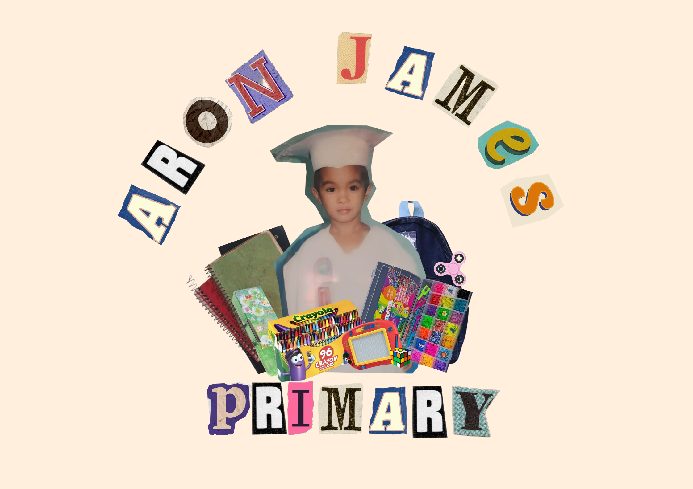
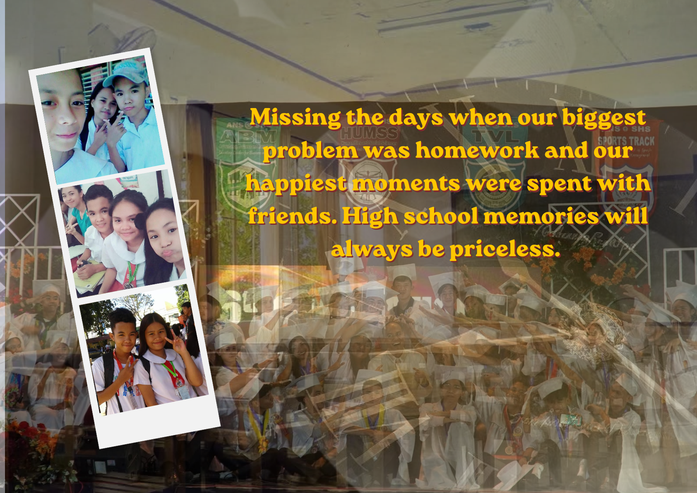
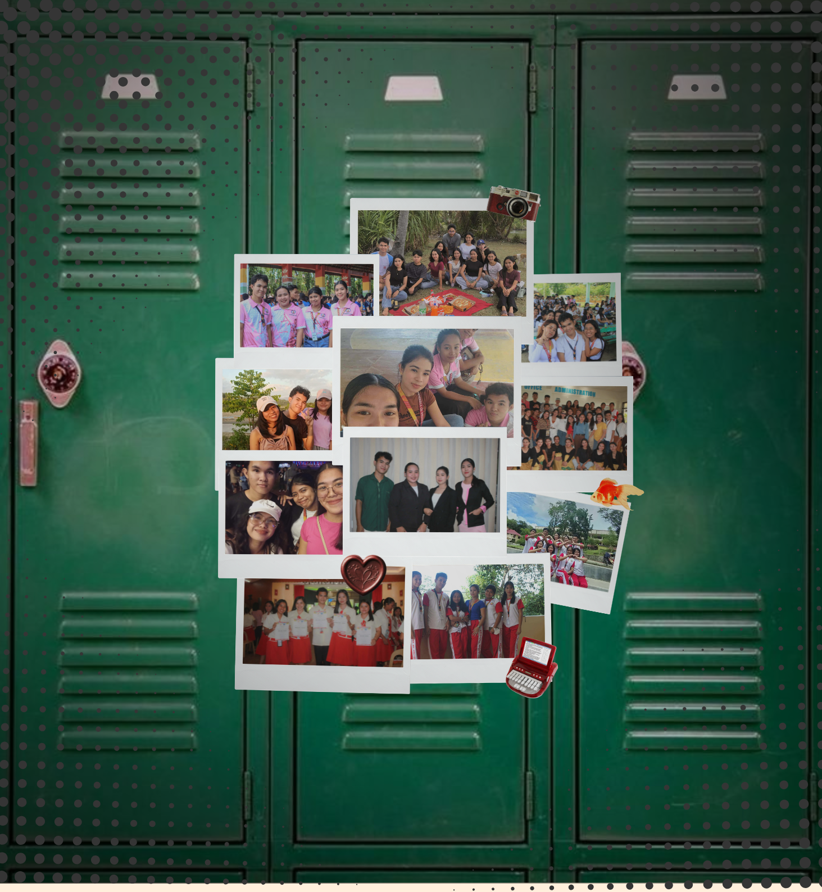

ARON JAMES DELGADO
Following
Followers
Albums
📢 My Learning Journey
Every step of my education shaped who I am today. From childhood dreams to my current course in college, this journey is full of lessons, growth, and memories ✨

June 01, 2011
"Where everything started" 🌱
My primary years were filled with curiosity, simple joys, and learning the basics of life and education.
This is where my dreams slowly began to grow.

March 08, 2023
"Becoming stronger every step" 💪
High school taught me discipline, friendship, struggles, and achievements.
I learned how to face challenges and keep moving forward no matter what.

August 10, 2025
"Chasing my future" 🚀
Now I am taking Bachelor of Science in Office Administration.
College is a journey of responsibility, skills, and preparing for my future career.
Every day is a step closer to my dreams.
